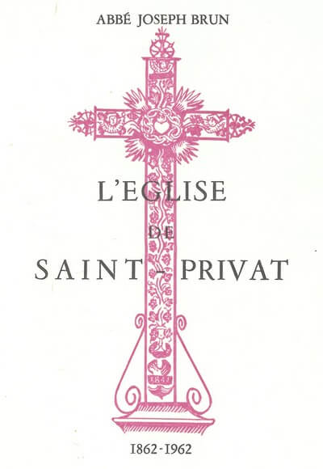

Saint-Privat ‒ L'Eglise
Les premiers fondements de l'église de Saint-Privat remontent à la fin du XI ème siècle. Il s'agissait alors d'une dépendance du prieuré d'Ucel, qui était rattaché à l'abbaye bénédictine de Saint-Chaffre.
Des chapelles y seront rapportées au XV ème et au XVI ème siècle. Au début du XVIII ème siècle elle disposait de 4 chapelles.
En 1962, à l'occasion des 100 ans de l'église de Saint-Privat, l'abbé Joseph Brun — alors curé de Saint-Privat depuis novembre 1957 — a consacré un petit livret à l'histoire des trois églises de Saint-Privat.
Table des matières
- Introduction
- L'église primitive
- L'église n° 2
- L'église actuelle

Introduction
En cette année 1962, au cours de laquelle nous allons fêter le centenaire de notre église, notre désir serait d'évoquer les détails de sa construction pour rappeler les soucis qu'elle a causés et par conséquent la faire mieux aimer, si possible, par les paroissiens de St Privat.
Au préalable, il sera nécessaire d'indiquer au moins brièvement ce que furent les deux églises précédentes et quelles furent leurs vicissitudes, pour mieux faire saisir pourquoi et comment on a été amené à construire en 1862 l'église actuelle.
Nous terminerons cet exposé en donnant la liste des curés de St Privat de 1677, nous n'avons pu remonter plus haut, jusqu'à nos jours.
Daigne St Privat, patron de la paroisse, nous aider dans l'élaboration de ce travail, revu par Monsieur l'Abbé Charray que nous remercions bien vivement. Il nous a en effet fourni des suggestions qui nous ont été précieuses.
L'église primitive
La vieille église de St Privat qui existait encore en 1840 était bien modeste et en bien mauvais état.
Elle n'avait que 14 mètres de longueur sur 13 de large à la hauteur des chapelles, mais 4 seulement dans la nef. Elle avait une tribune, mais qui menaçait ruine : à tel point qu'il fallait l'étayer à chaque solennité de peur d'un accident.
Elle était recouverte de lauzes, posées directement sur les voûtes. Celles-ci étaient une source de gouttières qu'il était à peu près impossible d'enrayer ; d'où des suintements qui minaient l'édifice de plus en plus.
Une échelle en bois, et vraisemblablement extérieure, permettait d'accéder au clocher. D'autre part, le pavé était à 2 mètres au-dessous du niveau de la place et la porte d'entrée si étroite et si basse qu'il fallait se courber pour y pénétrer.

Notre vieille église était d'autre part de forme bien bizarre, ainsi qu'on pourra s'en rendre compte d'après le croquis de la page 6, avec en regard celui de l'église actuelle.

De quand datait-elle ? Nul ne le sait. Ce qui est certain, c'est qu'elle fut plusieurs fois remaniée au cours des siècles. Remarquons cependant que la base du clocher (1), existant encore près de la cure et qui a été restaurée en 1959, possède une belle ogive du XV° siècle. Cette base du clocher a ceci de particulier qu'elle comprenait deux escaliers partant de deux faces opposées, mais se rejoignant au sommet et desservant la même entrée; l'un de ces escaliers, pris dans l'intérieur du mur (2), débouchait à l'intérieur de l'église, l'autre, à l'extérieur. Celui-ci a été refait en 1959 mais l'autre existe toujours dans son état primitif et l'extrême usure de ses marches montre bien qu'il a servi des générations de paroissiens.

D'assez nombreuses discussions s'élevèrent pour savoir s'il fallait réparer cette église... ou la démolir pour en édifier une nouvelle, beaucoup plus spacieuse. Dans l'impossibilité où l'on se trouvait d'agrandir l'ancienne, on se résolut entre 1838 et 1840 à la démolir purement et simplement et d'en construire une autre.
C'est de celle-ci, que nous appellerons l'église n° 2 que nous allons parler maintenant.